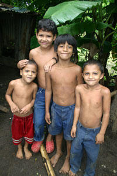
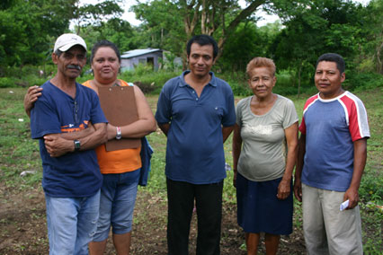

Villa Monte Fresco, Nicaragua
The people of Villa de Monte Fresco, a slum outside the city of Masaya, Nicaragua are among the 62% of the Nicaraguan population that lack access to proper sanitation facilities. The lack of these systems results in fecal contamination of water sources and the spread of diseases. In Nicaragua, diarrheal diseases born from this type of contamination are the leading cause of deaths for children under five years of age.
Decreasing the prevalence of diarrhea requires containing human waste by the use of latrines. Without complete latrine coverage, the community drinking water is vulnerable to contamination.
In Monte Fresco, a community of 880 people, 20% of the households do not have latrines and over 60% of the households that have latrines have ones that are defective in infrastructure and functionality. These latrines were improperly designed and constructed using makeshift parts and shelters. During the rainy season their pits overflow, spreading dangerous contaminants onto the street and into community water sources. Furthermore, the high prevalence of malnutrition amongst children in Monte Fresco raises their susceptibility to diarrheal infections.
This initiative supports the implementation of community driven sustainable sanitation through the use of double pit composting latrines. These latrines are a long lasting and ecologically sound alternative to the current pit latrines.
Each family will be responsible for constructing their own latrines. A 16 member community commission has already been established to take charge of the activity and resource management during the construction phase. Healthcare professionals from the local clinic have trained a group of community health workers to ensure latrine maintenance and promote hygienic practices.
This project will lower the incidence of diarrheal diseases, provide the basic human dignity of using proper toilets, and strengthen the capacity for further community planning and development.
Donations to support this project will be used to cover the expenses of the materials needed to build the latrines. This project will serve the 170 families (880 people) of Monte Fresco.
What Is A "Peri-Urban" Area
- A Settlement between a rural and urban area, commonly known as a slum.
- 827 million slum dwellers worldwide, expected to reach 1 billion by 2020.
- Over 100,000 people worldwide move to the slums every day
Community Member Profiles
Jose Antonio Muñon
Community Commission Director
Rudy Francisco Moltalban
Community Commission Member
Health Representative
Manuela de Jesus Araques
Community Commission Member
Women's Rights Representative
Vilma Rosa Luna Obando
Community Commission Member
Environmental Representative
Alfonso Mesa
Epidemiologist
Monimbó Health Center
Jenorys Ticay
Nurse & Community Health Trainer
Monimbó Health Center